همه ما میدونیم که سگها در ارتباط با ما آدمها ظرفیت مغزی بالایی دارن. اصلاً برای همینه که خیلیها از داشتن یه سگ باهوش کیف میکنن. اما از بین این همه سگ باهوش مثل کتل، روتوایلر، گلدن، ژرمن، پودل، بردر کالی، دوبرمن و… کدوم از همه باهوشتره؟ شناختن باهوش ترین نژاد سگ در دنیا نیازمند اینه که ما تعدادی از باهوش ترین نژادها رو طبق آمار گرفته شده، با همدیگه مقایسه کنیم.
معیار هوشمندی در یه سگ باهوش درواقع به میزان یادگیری و تربیتپذیری اون، نوع عکسالعملهای ذهنی و حسیاش و ریزهکاریهای رفتاری و عاطفی برمیگرده. حالا برخی از معیارهای انتخاب باهوشترین نژادها ژنتیکیه و برخی اکتسابی.
خیالت راحت ما این راهو بلدیم و قراره تو این مطلب ۱۴ تا از باهوش ترین سگ دنیا رو به همراه دلایل انتخابشون، به شما معرفی کنیم.
ویژگی سگهای باهوش
سگهای باهوش مثل بچههای با استعدادی هستن که توی مدرسه لازمه به چالش کشیده بشن وگرنه حوصلهاشون سر میره و شیطونیهای عجیب و غریب میکنن. پس اگه سگتون یکی از اون پشمالوهای باهوش و شیطونه باید براش یه برنامهی روزانه تهیه کنید که طبق اون هم آموزش ببینه و هم سرگرم باشه. اگه انرژی ذهنی و فیزیکی سگتون به صورت روزانه تخلیه نشه، آمادهی بداخلاقیهاش باشید.
معمولا باهوشترین سگها، بالاترین سطح انرژی رو دارن.
سگ هرچی باهوش تر باشه انرژی ذهنی و گاهی فیزیکی اش بیشتره، این یعنی برای سرگرم کردنش باید به هر روشی متوسل بشید تا این کار رو به بهترین نحو انجام بدید و انرژی سگتون رو تخلیه کنید.
از طرف دیگه، تربیت سگ های باهوش سختتره. پس بهتره وقت رو تلف نکنید و اگر سگ شما جزو نژادهای باهوشه، همین الان برای تربیت کردنش اولین قدم رو بردارید!
نگهداری از سگهای باهوش
مربیان آموزشی سگها و همینطور صاحبان سگ این باور رو دارن که سگهای باهوش خیلی سریع و آسون آموزش میبینن و تربیت میشن. این باور میتونه درست باشه اما نه همیشه، و نه در برابر تمام سگها… بعضی از سگها از لحاظ عاطفی به صاحبشون وابسته هستن و راضی نگه داشتن صاحبشون، خوشحالشون میکنه. در نتیجه این سگها خیلی سریع آموزش میبینن.
اما از طرف دیگه یکی از ویژگیهای سگهای باهوش، لجباز بودنشونه که این ویژگی باعث میشه آموزش و تربیتشون کمی سخت باشه. پس یادتون باشه باهوش ترین نژاد لزوما بهترین سگ نیست.
هرچی سگ باهوشتر باشه تربیتش مهمتر و سختتره. پس اگر سگ شما جزو نژادهای باهوشه، تربیت سگ خودتون رو جدی بگیرید.
آیا اندازهی سگم در میزان هوشش تاثیر داره؟
هرچند هنوز به صورت قطعی ثابت نشده اما تحقیقات نشون داده که سگهایی که جثهی بزرگتری دارن، حافظهی بهتری دارن و طی دورههای طولانیتری میتونن آموزشهایی که بهشون داده شده رو به یاد بیارن ولی نژادهای کوچکتر معمولا ممکنه نیاز به یادآوری داشته باشن. کدوم نژاد مناسب شماست؟ تو این کتاب براتون گفتیم.
سگ من چطوری میتونه باهوش ترین سگ بشه؟
بهترین راه برای پرورش و تقویت استعداد سگتون اینه که به صورت روزانه، از لحاظ ذهنی و فیزیکی درگیر نگهش دارید.
- با سگتون رفیق باشین
- براش تمرینات پیوسته طراحی کنین
- دادن تشویقی سگ فراموش نشه
- بهش ورزشهای فیزیکی بدین تا بتونین انرژی سگ خالی کنین.
- بازیهای سرگرم کننده باهم انجام بدین
- تهیه اسباب بازی سگ خیلی مهمه
۱۴ مورد از باهوش ترین نژاد سگها در دنیا
همهی سگها آموزشپذیر هستن ولی دونستن اینکه سگتون چه تواناییهای ذاتی داره کمک میکنه تا بفهمید چطوری بهش انگیزه بدین و روی چه بخشهایی از استعدادش بیشتر تمرکز کنین.
بیایید با ۱۴ نژاد باهوش ترین سگ و ویژگیهاشون آشنا شیم. ما این لیست رو از کتاب The Intelligence of Dogs استخراج کردیم. نویسندهی این کتاب روانشناس و مربی سگ هست.
ما برای معرفی باهوش ترین نژاد سگ به ترتیب از انتهای لیست شروع کردیم.
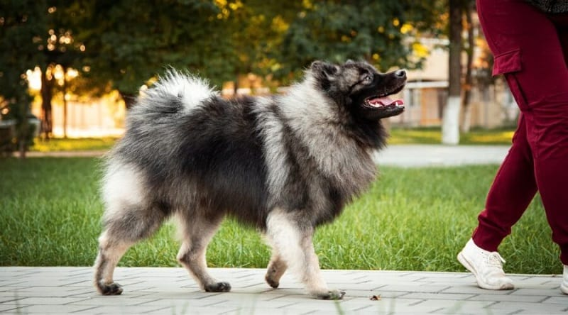
۱۴. سگ نژاد کیشاند
سگ باهوش کیشاند یا کیزهاند شاید باهوشترین این لیست نباشه اما به نسبت تمام سگهای دیگهای که تو این فهرست اسمشون نیومده، هوش بالاتری داره. کیشاند سگ هلندی پشمالو که اوایل به عنوان سگ نگهبان در کشتیهای تجاری پرورش پیدا کرد، امروزه به عنوان سگ همراه بیماران شناخته میشه.
کیزهاند که زیرمجموعه باهوش ترین سگ دنیا قرار میگیره یه خصیصه مهم داره که باید بهش توجه کنین. اونم اجتماعی بودن زیادشه. یعنی اون چون کنار آدما رشد پیدا کرده، خودش رو بدون اونا بی معنی میبینه. پس حواستون باشه که نباید زیاد تنها یا بیکار بمونه!
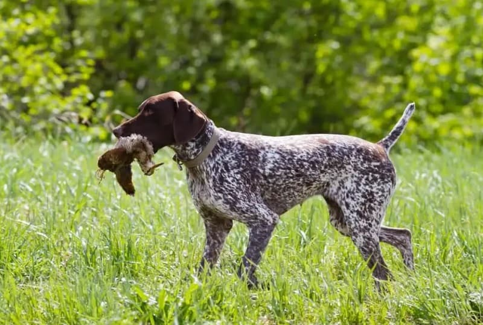
۱۳. سگ نژاد جرمن شورت هیر پوینتر
یکی از باهوش ترین نژاد سگ که باید بشناسیدش، جرمن شورت هیر پوینتره. این سگ باهوش که از دسته سگهای شکاری به حساب میاد، یه همراه بینظیر برای اهل سفر و افراد ماجراجوئه. شکارچیان آلمانی در سال ۱۸۶۱نمیدونستن که دارن یکی از باهوش ترین سگ های دنیا رو پرورش میدن!
این سگ باهوش هیکلی عضلانی داره، رنگ پوستش به خاطر خالهای زیادش، خاصه و بسیار آموزشپذیر و وفاداره. مهمترین ویژگیاش اینه که زیاد هیجانزده نمیشه و بلده خودش رو کنترل کنه و برای همین تو شکار ازش استفاده میشده.
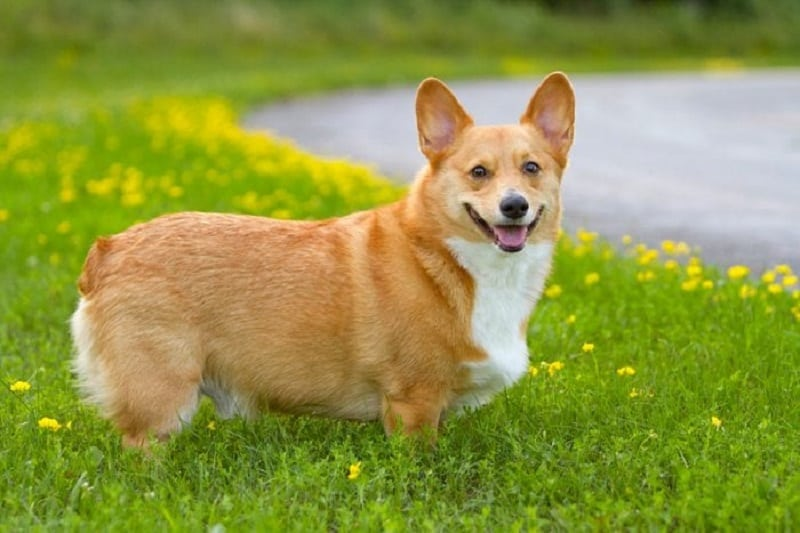
۱۲. سگ نژاد ولش کورگی
این سگ که پیش خانوادههای سلطنتی انگلستان پرورش پیدا کرده، یکی از اعضای لیست باهوش ترین نژاد سگ در جهان به حساب میاد. اون خیلی مطیعه و تو ردیابی نظیر نداره. با این که این سگ باهوش پاکوتاه به حساب میاد اما سرعت عمل بالایی داره که میتونه غافلگیرتون کنه.
سگ کورگی باهوش ترین سگ خانگی به حساب میاد که میتونه وظیفه نگهبانی رو هم به دوش بگیره و کنار بچهها شاد و خوشحال باشه.
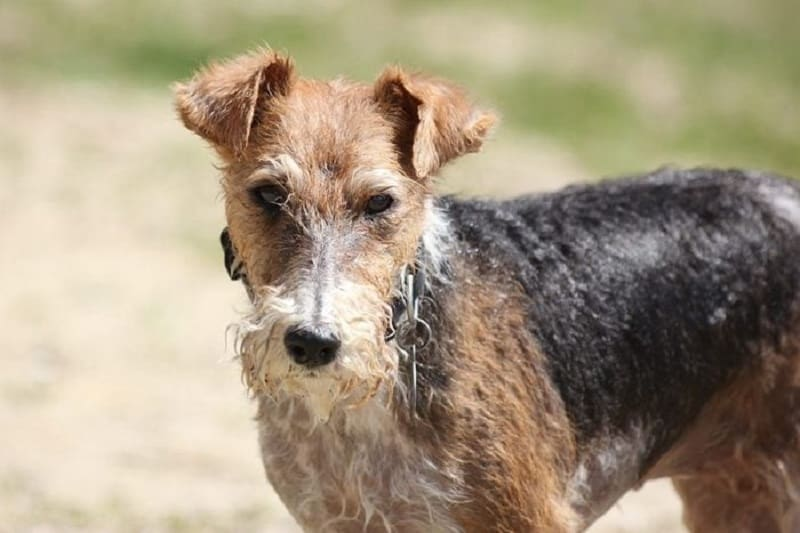
۱۱. سگ نژاد اشناورز
این سگ ریشدار که کوچکترین نژاد اشناورز (مینیاتوری) به حساب میاد، عضوی از لیست باهوش ترین سگ دنیاست. اشناورز مینیاتوری در کنار چابکی بدنی، بیشتر تو فعالیتهایی خوش میدرخشه که ذهنش رو هم به چالش بکشن.
این سگهای باهوش خونگی یه دوست مطیع، باهوش و فرز و چالاکن. این نژاد سگ باهوش، زرنگ ترین سگ دنیاست چون اوایل برای کار در مرزعه و کنترل آفات پرورش داده شد. اشناورزها با بو کشیدن دنبال آفتها و جوندگان میگشتن.
در ضمن به خاطر جثهشون، بچهها و خانوادهها عاشق اونان و اونا هم در مقابل خیلی قابل اعتماد و معاشرتیان.
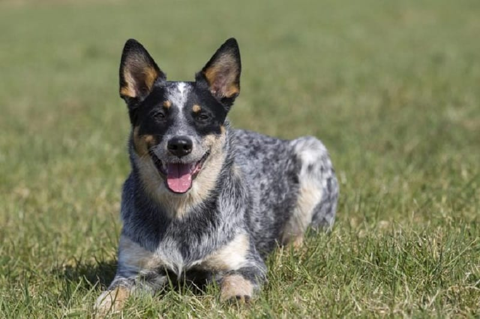
۱۰. سگ نژاد کتل استرالیایی
از آخر شروع میکنیم: دهمین سگ از باهوشترین سگهای جهان، سگ کتل هست. کتل استرالیایی، نژادی با جثهی متوسط هست که اصالتا در استرالیا پرورش داده میشده. کتل استرالیایی سگ نگهبان محسوب میشه و با استعداد بالای خودش هر آموزشی رو طی چند تکرار یاد میگیره. این نژاد توانایی یادگیری به طور خودآموز رو هم با مشاهدهی دقیق دارن. نکتهی جالب اینکه کتلهای استرالیایی به شدت مرتب و منظم هستن و بعد از اینکه بازیشون با اسباببازیهاشون تموم شد، اونا رو سر جای خودشون قرار میدن.
این نژاد به عنوان سگه گله پرورش داده میشد و آموزشهای لازم بهش داده میشد تا اگه گوسفندی از گله دور شد با گاز گرفتن اون رو به سمت گله برگردونه. پس این نژاد در صورتی که در دوران تولگیش آموزشهای لازم رو نبینه، ممکنه آدما رو گاز بگیره؛ به همین دلیل نگهداری این نژاد به خانوادههایی که بچههای کوچیک دارن خیلی پیشنهاد نمیَشه.
علاوه بر این لازمه افرادی که خودشون هم سطح انرژی بالایی دارن از کتل نگهداری کنن، چون اونها به طور کلی به فعالیت و ورزش و محرکهای ذهنی احتیاج دارن تا انرژیشون تخلیه بشه. در غیر این صورت حوصلهاشون سر میره، کلافه میَشن و خرابکاری میکنن. این ویژگی توی بیشتر سگهای این لیست مشترک هست.
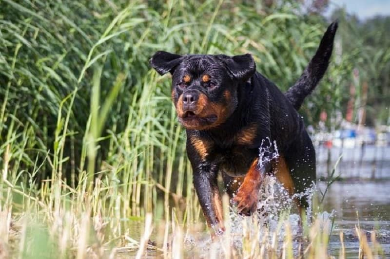
۹. سگ نژاد روتوایلر
نژاد روتوایلر، نژادی دوست داشتنی، وفادار و مطمئن هست. این نژاد گزینهی خوبی برای سگ پلیس و کمکیار پزشکهاست. این سگها خیلی خوب زبان بدن انسانها رو متوجه میشن و به همین خاطر میتونن سگهای نگهبان عالیی باشن. سگ روتوایلر بر این اساس که چقدر به یه نفر اعتماد دارن، جنبههای مختلف شخصیتشون رو به نمایش میذارن؛ به همین خاطر وقتی با اعضای خانواده هستن روی خوش مشرب و بازیگوششون رو میَشه دید و وقتی پای غریبهای به خونه باز میَشه به شدت کنترلگر و محتاط میشن.
باهوشترین سگهای دنیا زمانی که اعتمادشون رو به دست آوردین به راحتی آموزشپذیر میشن. اگه تصمیم دارین یه روتوایلر نگه دارید به خصوص اگه توی خونتون بچهی کوچیک دارید خوبه که اول سابقهی خانوادگی اون رو چک کنید چون ممکنه رفتارهای خشن از طریق ژن بهشون رسیده باشه.
یادتون باشه روتوایلرها در عین حال که یکی از باهوش ترینها هستن، به یک عالمه تمرین فیزیکی و ذهنی احتیاج دارن. در غیر این صورت خیلی سریع حوصلهشون سر میره و برای خودشون سرگرمیهایی مثل گاز گرفتن و خراب کردن هر وسیلهای که دم دستشون باشه رو ایجاد میکنن.
اگه دوست داشتید در مورد نگهداری این نژاد بیشتر بدونید خوندن مطلب معرفی نژاد سگ روتوایلر میتونه مفید باشه.
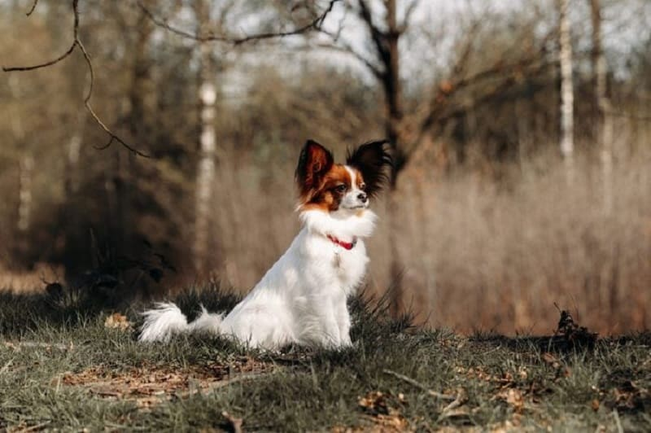
۸. سگ نژاد پاپیلون
این نژاد سگ عروسکی بسیار با استعداد و باهوشه. سرعتش زیاده و رفتار خیلی دوستانه و گرمی داره. روحیه رقابتی این نژاد باعث شده که توی مسابقات عالی عمل کنه. سگ پاپیلون در زبان فرانسه به معنی پروانه هست؛ که به شکل و حالت گوش و سر این نژاد اشاره داره. مثل اکثر سگهای کوچک جثه، این نژاد هم رفتارهای لجبازانهی مخصوص خودش رو داره؛ اما اگه آموزشی که بهش میدیدن با جایزهها و تشویقیهای قابل توجهی همراه باشه، یادگیری خیلی سریعی داره.
باهوش ترین نژاد سگ کوچک دنیا به شجاعتشون شناخته میَشن. به همین دلیل پاپیلونها یک همراه و دوست خوب برای صاحبشون محسوب میشن. این سگ باهوش خانگی برای خانوادهها بسیار مناسبه اما در صورتی که بچهی کوچیک توی خونه دارید، بهتره که حواستون بهشون باشه چون پاپیونها بدن به شدت ظریف و آسیبپذیری دارن و ممکنه بچهها ناخواسته بهشون آسیب بزنن.
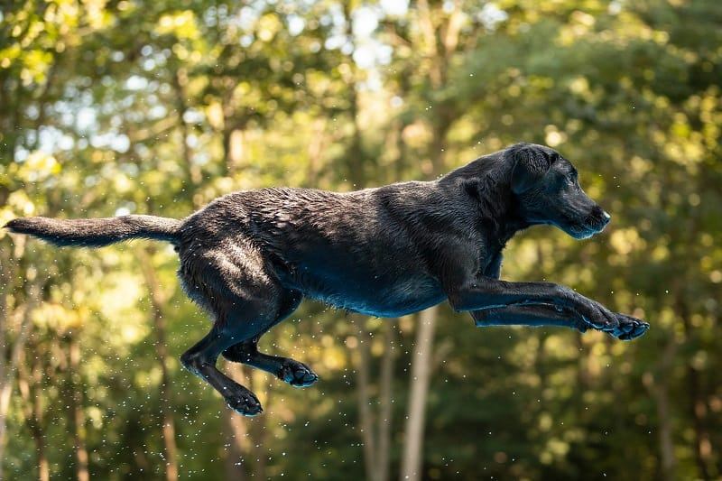
۷. سگ نژاد لابرادور رتریور
هفتمین سگ در لیست باهوش ترین نژاد سگ، لابرادور رتریور هست. سگ لابرادور رتریور، ۲۷ ساله که محبوبترین سگ در آمریکا شناخته میَشه؛ اما دلیل این همه محبوبیت چیه؟
بله لابرادورها علاوه بر اینکه بسیار با استعداد و باهوشن، عاشق اینن که صاحبشون رو راضی نگه دارن؛ پس آموزشپذیریشون خیلی زیاده. نژاد لابرادور رتریور رو پرورش میدن و ازشون برای شناسایی مواد مخدر کمک میگیرن. علاوه بر همهی اینا لابرادورها برای خانوادهها هم گزینهی خوبی محسوب میشن.
اونها به شدت پر سرعتن و بدنی بسیار قوی دارن و معمولا پر از انرژی و نشاطن. به همین چند دلیل به اونها «هایپر اکتیو» یا بیشفعال هم گفته میَشه. این نژاد، بخصوص توی ۳ سال اول زندگیش، به یک عالمه تمرین روزانهی ذهنی و فیزیکی احتیاج داره. برخلاف خیلی از نژادها لابرادورها با مشاهدهی دقیق میتونن به صورت خودآموز چیزهای زیادی رو یاد بگیرن.
۶. سگ نژاد شتلند شیپداگ یا سگ گله شتلند
ششمین جایگاه از لیست باهوش ترین نژاد سگ در دنیا، به سگ شتلند شیپداگ اختصاص داره. این سگهای کوچیک جثه که اصالتا متعلق به اسکاتلند هستن، در واقع سگ مینیاتوری محسوب میَشن و توی فرمانبرداری عالی هستن. این نژاد عاشق پارس و بازی و شیطونی کردنه و در کنار همهی این بازیگوشیها عاشق بغل شدن هم هست.
شتنلندها سگ گله محسوب میشن به همین خاطر نسبت به غریبهها حساس هستن و حسابی بهشون پارس میکنن. در عوض عاشق خانوادهاشون هستن و به شدت وفادارن. سگهای این نژاد، باهوش و مستقل هستن و دائما محیط اطرافشون رو تحت نظر دارن. برای یادگیری خیلی مشتاقن و منتظر سیگنالی از جانب شما هستن. خوندن رفتار انسانها برای این نژاد خیلی آسونه و میفهمن که چه انتظاری ازشون میره. بدون تمرینات ذهنی و فیزیکی روزانه، مثل پرتاب کردن توپ و آوردنش، رفتارهای اعتراضی و مخرب مثل مرتب پارس کردن و یا خراب کردن وسایل خونه رو از خودشون نشون میدن.
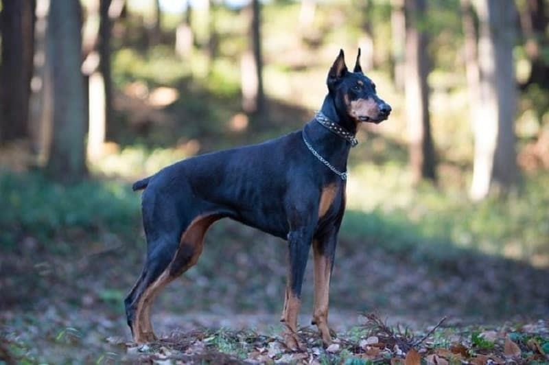
۵. سگ نژاد دوبرمن پینچر
این نژاد باهوش و با ابهت، به عنوان سگی با جثهای متوسط هم سگ نگهبان و هم سگ همراه شناخته میشن. دوبرمنها تمایل دارن فقط با یک نفر احساس نزدیکی کنن و اون رو دوست و صاحب خودشون بدونن به همین خاطر بهترین انتخاب برای خانوادهها بخصوص خانوادههایی که بچهی کوچیک دارن نیستن. مثل بقیهی سگهای با استعداد و باهوش نیاز به تمرینات ذهنی و فیزیکی روزانه دارن؛ در غیر این صورت حوصلهاشون سر میره و دست به کارهای مخرب میزنن.
این سگ باهوش خانگی، یکی از وحشی ترین نژادها محسوب میشه و باید برای مراقبت از اون، تجربه و مهارت کافی داشته باشین. اگه دوست داشتین با لیست وحشی ترین و خطرناک ترین نژادهای سگ آشنا بشین، پیشنهاد میکنیم که مقاله خطرناک ترین سگ دنیا رو هم بخونین.
دوبرمنها بینهایت شجاع هستن و سرعت بالایی دارن و معمولا به عنوان سگهای پلیس و یا سگهای جنگی تربیت داده میَشن. اگه دوست داشتید در مورد خلق و خو، نگهداری و قیمت سگ دوبرمن پینچر در ایران بیشتر بدونید خوندن مطلب نژاد سگ دوبرمن رو بهتون پیشنهاد میکنیم.
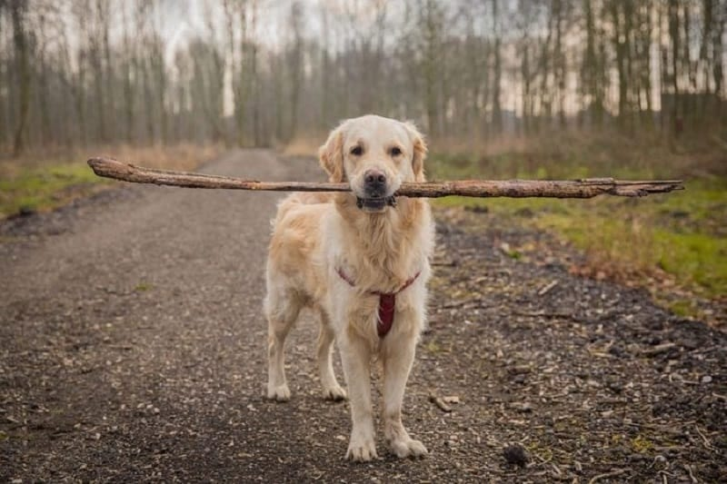
۴. سگ نژاد گلدن رتریور
گلدن رتریورها از محبوبترین و باهوش ترین نژاد سگ برای خانوادهها محسوب میشن و توی تقسیم بندی هم در ردهی چهارم قرار میگیرن. اونها با استعداد و مهربون هستن و سعی میکنن توی هر کاری بهترین باشن؛ از پیدا کردن و نجات افراد گرفته تا شکار.
سگ گلدن رتریور از وفادارترین و باهوش ترین نژاد سگ خانگی محسوب میشن. اونها به قدری باهوش هستن که یه دستور رو در کمتر از ۵ بار تکرار یاد میگیرن. علاوه بر این قدرت انطباقپذیری گلدن رتریورها باعث شده که به صورت خودآموز و با آزمون و خطا چیزهای جدید رو یاد بگیرن.
گلدن رتریورها در فهمیدن احساسات انسانها خیلی خوب عمل میکنن تا جایی که وقتی حس کنن صاحبشون غمگین هست، برای شاد کردنش «بغل کردن» و «بوسیدن» رو به شیوهی خودشون انجام میدن. تحقیقات نشون داده که این نژاد در طول عمرش بیشتر از ۲۰۰ دستور رو میتونه یاد بگیره.
۳. سگ نژاد ژرمن شپرد
سگ ژرمن شپرد دومین نژاد سگ محبوبه و توی لیست باهوش ترین نژاد سگ در دنیا هم ردهی سوم رو به خودش اختصاص میده. این نژاد به عنوان سگ پلیس و کمکیار پزشک شناخته میشه و از ویژگی های اصلیش هوش، شجاعت و فرمانبرداریش هست. سگ ژرمن شپرد در وفاداری بینظیره و برای خانوادههای گزینهی خوبی محسوب میشه.
برای ژرمن شپردها هدف داشتن خیلی مهمه. وظیفهای مثل مراقبت از بچهها میتونه بهشون حسی از هدف داشتن بده و انرژی ذهنیشون رو تخلیه کنه. اگه دوست داشتین در مورد نگهداری از ژرمن شپرد و آموزشش بیشتر بدونید، خوندن مطلب سگ ژرمن شپرد میتونه بهتون کمک کنه.
۲. سگ نژاد پودل
پودلها از نژادهای بسیار معروف در جهان هستن. این نژاد با اینکه ردهی دوم از باهوشترین سگها رو به خودش اختصاص میده؛ اما عنوان باهوشترین نژاد سگ خانگی رو به اسم خودش رقم میزنه و در صدر جدول قرار میگیره.
سگهای این نژاد نهتنها بسیار باهوش هستن، بلکه بینهایت هم مغرور و پر انرژی هستن. برای افرادی که به حیوونها حساسیت دارن، نگهداری از سگ پودل پیشنهاد میشه چون این سگها ضد حساسیت هستن. آموزش ردیابی، شکار، برگردوندن اشیا پرت شده و فرمانبردای به این نژاد بسیار آسون هست. این نژاد اصلاتا سگ فرانسوی محسوب میشه در مطلب سگ پودل میتونید بیشتر با این سگ بامزه و باهوش آشنا بشید.
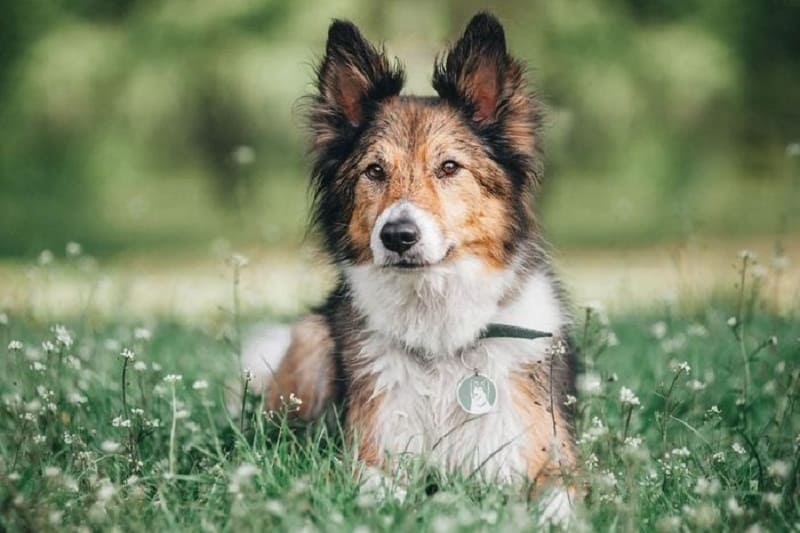
۱. سگ نژاد بُردر کولی
این شما و این باهوش ترین سگ جهان! سگ نژاد بردر کولی در صدر جدول به عنوان باهوش ترین نژاد سگ دنیا قرار میگیره. بردر کالیها میتونن توی کمتر از ۵ ثانیه یه دستور جدید رو یاد بگیرن و تا ۹۵% مواقع درست انجامش بدن. بردر کالیها بسیار پر انرژی و خون گرم هستن. این نژاد به موهای مشکی و سفیدش، جثهی متوسط و انرژی زیادش معروفه و در اصل سگ چوپان محسوب میشه. علاوه بر این، باهوش ترین سگ خانگی یکی از طولانیترین طول عمرها رو بین سگها داره که به ۱۷ سال میرسه.
اولین سگ باهوش دنیا به خاطر تواناییشون در یادگیری خیلی سریع، به سطح بالایی از محرکهای ذهنی احتیاج دارن؛ و همینطور به خاطر انرژی بالاش، به تمرینات فیزیکی روزانهی زیادی هم احتیاج داره. به همین خاطر این نژاد برای فضاهای باز مثل باغها مناسبتره چون در فضاهای بسته خیلی زود کلافه میَشه.
کم هوش ترین نژاد سگ دنیا کدوما هستن؟
در مقابل این لیست، تعدادی از نژادها از نظر آموزشپذیری و عملکرد و اجتماعی شدن، جزو خنگ ترین نژاد سگ شناخته میشن، مثل:
- باست هوند
- ماستیف
- چاوچاو
- باسنجی
- بولداگ
- افغان هوند
- بیگل
- پیکینیز
- بورزوی
- بلادهاند
البته که این سگها دوست داشتنی هستن و فقط کافیه شما برای تربیتشون زمان بیشتری صرف کنین و به ژنتیکشون احترام بذارین.
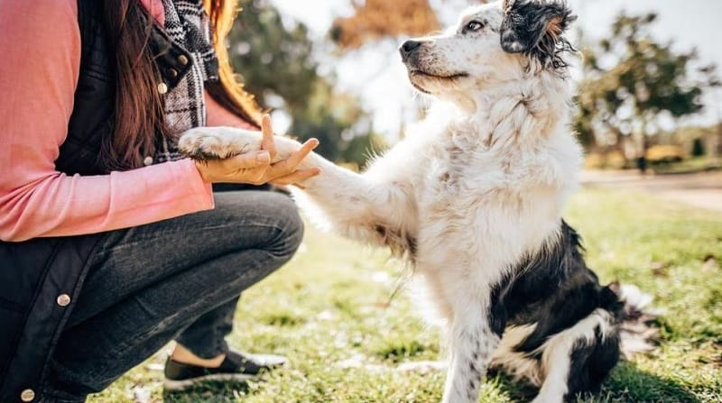
قیمت هر نژاد سگ، چقدره؟
قیمت هر کدوم از این این نژادها رو از کجا میشه پیدا کرد؟ اگر به دونستن قیمت نژادهای مختلف سگ و ویژگیهاشون علاقمند هستید ویدیوی زیر رو که در مورد قیمت و ویژگی ۱۰ نژاد سگ محبوب در ایران هست، در یوتیوب پت پرس ببینید.
توجه: با قندشکن وارد شوید! 🙂
قیمت ۱۰ نژاد محبوب سگ در ایران
جمعبندی
فارغ از اینکه سگ شما جزو باهوش ترین سگ دنیا هست یا نه تمام سگها با صبر و پیگیری شما، میتونن آموزش ببینن. پس هیچ وقت ناامید نشید و به آموزش دادن به سگتون ادامه بدین. فراموش نکنین که آموزش باهوش ترین نژاد سگ هم نیاز به صبر داره.
شما تجربهی نگهداری کدوم یک از باهوش ترین سگ های جهان رو داشتین؟ به نظر شما باهوش ترین سگ چه نژادیه؟ اگه سگ شما از نژاد دیگهای هست ولی به باهوش و با استعداد بودنش ایمان دارید توی قسمتها کامنتها با ما در میان بگذارید.
سلام،ببخشید نژاد بردر کالی بهتر است یا گلدن رتریور؟
و هردو در ایران پیدا می شوند؟
هر دو در ایران پیدا میشن
اینکه کدوم بهتره به ۱۰ سوال مختلفی که باید شما پاسخ بدین برمیگرده
در این خصوص کتاب انتخاب نژاد سگ رو مطالعه بفرمایید تا بهترین تصمیم رو بگیرید
سلام
میخواستم بدونم ژرمن شپرد شولاین و مالتیز اگه از بچگی باهم بزرگ بشن باهم کنار میان
میشه لینک مربوط به سگ مالتیز رو هم رایم بزارید
سلام مارال عزیز
بله اگر از تولگی باهم بزرگ بشن و بهم عادت کنن ایرادی نداره اما همیشه مراقب دعوا های احتمال باش چون مالتیز نژاد شیطونیه و ژرمن قوی و بزرگ پس ممکنه به مالتیز آسیب بزنه
اینم لینک مقاله مربوط به سگ مالتیز :همه چیز درباره سگ مالتیز؛ سگ آرامشبخش و زیبا
سلام
میخواستم بدونم ژرمن شپرد شولاین و مالتیز اگه از بچگی باهم بزرگ بشن باهم کنار میان
سلام خسته نباشید
میخواستم بدونم قیمت سگ نژاد لابرادور رتریور
و گلدن رتریور چنده؟
خیلی ممنون
سلام
من کلی راجب سگ ها میدونم اما نمیدونم شی هواوا بگیرم یا مالتیز
درباره ی هردوشون هم تحقیق کردم
اما توش موندم کدوم نزاد رو بگیرم
ممنون میشم اگر راهنمایی کنید.
سلام هانا عزیز ، تربیت و آموزش شی هواهوا کمی زمان و صبر بیشتری نیاز داره پیشنهاد میکنم برای انتخاب بهترین نژاد مطابق سبک زندگیتون کتاب راهنمای انتخاب بهترین نژاد سگ مطالعه کنید.
سلام من نمیدونم پامرانین بخرم یا گلدن رتریور لطفا بیشتر کمکم کنید
سلام نورا جان،
اول از همه بهتره حیوونا به سرپرستی گرفته بشن تا خریداری.
هرکدوم ویژگیای متفاوتی دارن پیشنهاد میکنم مقاله های هرکدومو بخونین تا بتونین بهتر تصمیم بگیرین.
سلام ممنون قیمت گلدن چند هست
سلام کژال عزیز
بهتره حیوونا به سرپرستی گرفته بشن تا خریداری.
ما فروشنده نیستیم و اطلاع دقیق و به روزی از قیمتا نداریم.
باعرض سلام و خسته نباشید . سگ پامرانین سگ محبوبی نیست چون گرون ترین سگ جهان رده بندی میشها من میخوام یه پامر ماده بگیرم میخوام یه بار زایمان کنه و بعد عقیم سازی اش بکنم مشکلی پیش نمیاداگه ممکنه جواب بدین ممنون از زحماتتون
سلام فاطمه جان،
حداقل در ایران خیلی طرفدار داره با وجود گرون بودنش.
خیر مشکلی پیش نمیاد فقط زمانی که فحل نیست برای عقیم سازیش اقدام کنین.